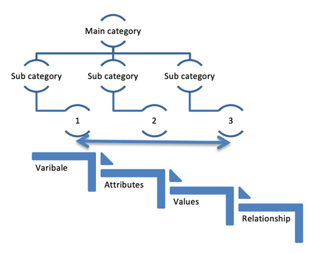
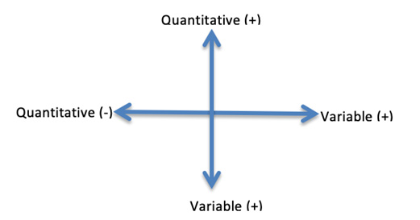

Personal Reflection
During week 1, I was not very clear of the difference between Research Methods and Professional Practices and even the need of understanding it in detail before the final research. However, after attending the first seminar session, I clearly understood the importance of learning it. The insights shared by the tutor and the collaborative discussions were beneficial in effectively understanding the core concepts and practical usage of research methods.
1.Feelings and Evaluations
1.1 Learning - What did I learn? – Week by week Learning Log
Week 1
Readings from the course Ebook and lecture cast covering the research methods fundamentals, helped me improve my knowledge on the difference between inductive and deductive reasoning as listed in below table.
It was interesting to learn why ethics are important and how they may relate to your area of research and your professional practice.
Week 2
Topics like characteristics that make up a suitable research topic (summarized in below table), understanding the rational and creative methods for formulating a research idea, means of transforming research ideas into crafted research questions and proposal, how to conduct a literature search, how to critique the literature and to present a literature review etc. were well-explained during the seminar and properly covered in reading materials.
Characteristics-that-make-up-a-suitable-research-topic
The research topic must be FINER as outlined below to locate the suitable research topic Hulley et al. (2007) Feasible- The researcher must be realistic scaling of their research for data collection and resources available. Interesting- The research topic should boost the interest of researcher and also to their peers and community. Novel- Topic should create an insight to the field of study with investigating. Ethical- Most important considerations for choosing the research topics should have appropriate authorities will approve. Relevant- the research topic should be relevant to the scientific community and people involved of the area of study.
| Rational Methods | Creative Method |
|---|---|
|
|
Week 3
I gained additional knowledge on the different research methods and data collection methods related to each method of research. It was interesting to learn that data collection method may change based on type of research effort needed. This includes and not limited to factors like:
- The environment where in observations takes place
- The people involved in the study.
- The specific activities involved in research
- Interactions between respondents and researcher (Creswell , 1994)
Week 4
Coverage of various data collection tools as mentioned below and selection of proper data analysis method and type of research was the main learning outcome during this week.
- Survey
- Interview
- Direct observations
- Focus groups
- Existing literature
Week 5
This week I have learned how interviews and surveys fit into research and whether either or both might be useful for my research. How pre- and post-testing can be used in research (Salkind N J 2010) was something very interesting to learn.
- Personal interviews
- Online Survey via Websites
- Telephonic Interviews
- Email Interviews
Week 6
During this week, I have learned about the difference between a good questionnaire and a poor one, how to design a questionnaire to obtain the responses you will need for your investigation and how the data obtained can be analyzed.
Good Questionnaire (Crawford IM, 1990)
- Outlined with the purpose of the survey
- The questions are simple, on point, and easy to understand.
- Appropriate options especially in your multiple-choice and ranking questions
- Does not including double-barreled questions
- Includes neutral answer options when required
Bad Questionnaire (Crawford IM, 1990)
- The questions are in biased language to influence survey respondents.
- The questions are complex, vague, and ambiguous.
- The questions are inheriting biases that prevent respondents from providing objective answers.
- Requests multiple information at the same time
- The questions prevent respondents from providing meaningful feedback.
- The questions are often leads to confusion in the minds of the respondents.
The data obtained will involve analysis on the following steps (Sudman, Bradburn, & Schwarz, 1996)
- Briefing the data required
- Identifying the relevant data
- Filtering the data Unambiguously
- Locating specific data required
- Arriving at the objective of research
Week 7
This week’s study focused the concepts of validity, generalizability and reliability effect on investigation and the design of research method. Discussions on how to analyze and present the results you obtain from your investigation and how they will enable you to answer your research question was specifically interesting.
Week 8
This week we learned about the different levels of measurement in research and how to produce measures of location and spread in detail. Learnings on how to perform appropriate hypothesis tests helped me complete the exercise activities comfortably.
Level of measurement
The level of measurement is defined with the relationship between the values that are assigned to the attributes for a variable. WMK Trochim, JP Donnelly. (2001)
Produce measures of location and spread.
Measurement involves the construction of an instrument that is associated with qualitative constructs and quantitative metric units. This evolves efforts in psychology and education to measure "unmeasurable". It is the attempt measure abstracts of research concepts. WMK Trochim, JP Donnelly. (2001}
How to Perform appropriate hypothesis tests.
The Hypothesis testing can be performed in 5 main steps (Roger B Davis & Kenneth J Mukamal Originally, 2006)
- Stating the research hypothesis as a null (Ho) and alternate (Ha) hypothesis.
- Collect data to test the hypothesis.
- Performing an appropriate statistical test.
- Identifying the data to reject or fail to reject your null hypothesis.
- Analyzing the findings and discussing the section.
Week 9
I have learned about the different types of analysis and how they may be useful for the data
collected.
The data analysis involves different types of analysis that includes (Attride-Stirling J, 2001)
- Developing research questions and linking them to study designs
- Understanding differences approaches required and their application
- Employing different methods for collecting and analyzing qualitative data
- Involving the methods for collecting quantitative data and basic concepts of probability sampling
- Understanding descriptive analyses for quantitative data
- Interpreting multiple sources of data and develop evidence-based conclusions and recommendations
Understanding the different charts available to present the different types of data you have obtained was very useful.
Week 10
Understanding how to structure a dissertation and how to prepare yourself for the writing was the key learning point of this week.
The dissertation is an academic project that marks your transition from student to scholar. Writing a dissertation is like writing a book. It is a self-directed process done within a weekly deadline, it does not involve regular discussions with classmates, reading assignments, or one telling what needs to be done—This is done independently and the process involves. (Bulker Joan, 1998)
- Figuring out where to work and planning dissertation work hours.
- Investigate graduation requirements
- Making a list of all the little things that needs to be done for a given sections of the dissertation
- Working on acknowledgements
Week 11
More of this week’s efforts was on e-learning portfolio preparation. Activities related to it helped me self-review the need of learning the right way.
Week 12
This week’s learnings included fundamental concepts of project management, project life cycle and methodologies, technologies/software needed to support remote collaboration, how projects can be impacted by risk and uncertainty and how to control risk and manage project change effectively.
Risk can be identified and evaluated. All project teams should develop a risk mitigation plan, which is a plan to reduce the impact of an unexpected event, by grouping the risk in the following phase
- Risk avoidance
- Risk sharing
- Risk reduction
- Risk transfer
1.2 Reading – What did I read and watch
I referred to the eBook [1] and sources listed in references below thoroughly, and the lecture casts and seminar recordings of the modules were also very helpful.
1.3 Writing
I have actively participated in the first collaborative discussions with a well-researched post. I have also contributed to the module wiki with 2 posts.
2.Evaluation:
The whole learning process and teamwork went as planned. However, proper time management would have reduced the additional efforts on assignment work.
3.Conclusion:
The learning and assessment experience was refreshing and encouraging.
References
- David B. Resnik, J.D., Ph.D. (2020) What is Ethics in Research & Why is it Important?
- Stephen B. Hulley. (2007) Designing Clinical Research
- Tang. (2008) Weijun Shanghai Jiao Tong University
- Weisberg, R. W. (1993) Creativity: Beyond the myth of genius. New York, NY: Freeman.
- Milgram, S. (1963) Behavioural study of obedience. Journal of Abnormal and Social Psychology, 67, 371–378.
- Fink, Arlene. (2014)Conducting Research Literature Reviews: From the Internet to Paper. Fourth edition. Thousand Oaks, CA: SAGE, 2014.
- John W. Creswell. (1994) Research Design: Qualitative, Quantitative, and Mixed Methods Approaches
- Meredith Zozus. (2017) The Data Book Collection and Management of Research Data
- Salkind, N. J. (2010). Encyclopedia of research design. Thousand Oaks, Calif, SAGE Publications.
- Crawford, I. M. (1990) Marketing Research Centre for Agricultural Marketing Training in Eastern and Southern Africa. Harare Zimbabwe.
- Sudman, S., Bradburn, N. M., & Schwarz, N. (1996). Thinking about answers: The application of cognitive processes to survey methodology. San Francisco, CA: Jossey-Bass
- The humanistic psychology-positive psychology divide: contrasts in philosophical foundations. Waterman ASAm Psychol. 2013 Apr; 68(3):124-33.
- Kvale S, Brinkmann S. Newbury Park, London: Sage .(2009) Interviews: Learning the Craft of Qualitative Research Interviewing.
- Carcary M. The research audit trail – Enhancing trustworthiness in qualitative inquiryElectron J Bus Res Methods. 2009 7:11–24.
- Golden-Biddle, K., & Locke, K. (1997) Composing Qualitative Research. Sage Publications.
- WMK Trochim, JP Donnelly. (2001)Research methods knowledge base
- Roger B. Davis and Kenneth J. Mukamal Originally (2006) Hypothesis Testing Vol. 114, No. 1
- Attride-Stirling J. (2001). ‘Thematic networks: an analytic tool for qualitative research’. Qualitative Research, vol. 1, no. 3: pp. 385–405 [Online]. Available at http://goo.gl/VpQeQJ (retrieved on 2 January 2014).
- Bolker, Joan. (1998) Writing Your Dissertation in Fifteen Minutes a Day: A Guide to Starting, Revising, and Finishing Your Doctoral Thesis, rev. ed. New York: Henry Holt.
- Marc Zao-Sanders.( 2017) A 2×2 Matrix to Help You Prioritize the Skills to Learn Right Now
- Kor, R. and Wijnen, G. (2002). 50 checklisten voor project- en programmamanagement. Deventer: Kluwer.
- Westland, J.( 2006) The Project Management Life Cycle, Kogan Page, London,p1,
- Parker, D., & Mobey, A. (2004). Action Research to Explore Perceptions of Risk in Project Management. International Journal of Productivity and Performance Management 53(1), 18–32.